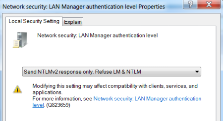
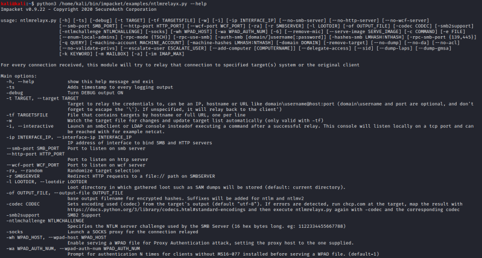

3. NTLMv2 Relay
The NTLM Relay attack is not stopped also if the Authentication
Level is set to NTLMv2
To do a NTLM
Relay attack on NTLMv2 protocol we need the tool
Impacket:
https://github.com/SecureAuthCorp/impacketSpecifically
we will need one of its script
ntlmrelayx.py:
https://github.com/SecureAuthCorp/impacket/blob/master/examples/ntlmrelayx.pyInstall
Impacket:
apt-get update -y
apt-get install -y python3-impacket
use smbrelayx.py:
python3 /home/kali/bin/impacket/examples/ntlmrelayx.py --help
